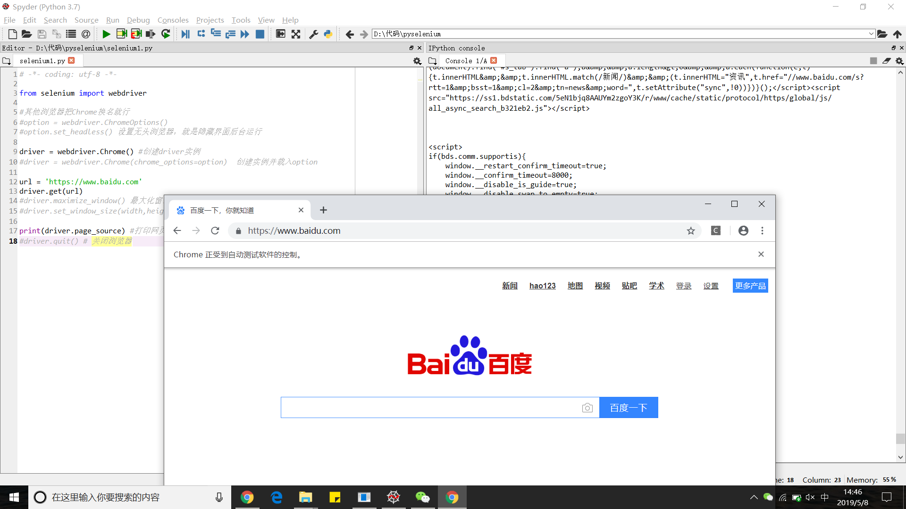
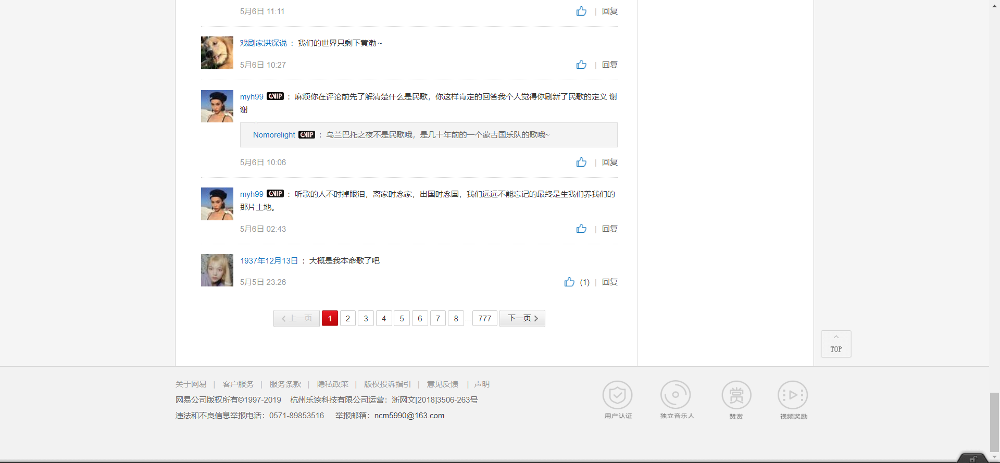
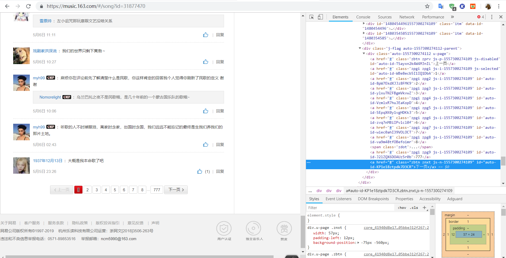

动态爬取解决方案 之 selenium
驱动按需选择：
- chrome （内核版本要对应）https://npm.taobao.org/mirrors/chromedriver/
- firefox
- IE
- 下载好后把解压得到的驱动放到设置了环境变量的路径下就行了，如果你的python设置了环境变量，应该丢到python目录下就行了。
https://selenium-python-docs-zh.readthedocs.io/zh_CN/latest/ selenium中文教程
简单测试
1 | # -*- coding: utf-8 -*- |

定位
selenium提供多种方法对元素进行定位，返回WebElement对象，而上面提到的driver就相当于最大的WebElement对象
1 | #以下都是单次定位，返回第一个定位到的。如果想多次定位，给element加个s就行，返回的是符合元素的列表 |
除了上面这些公有的方法，还有2个私有的方法来帮助页面对象的定位。 这两个方法就是 find_element 和 find_elements，需要导入By类辅助，接收一个By类属性及其对应语法/值
1 | from selenium.webdriver.common.by import By |
frame切换
很多人在用selenium会遇到所见非所得，或者定位页面元素的时候会定位不到的问题，这种情况很有可能是frame在搞鬼，必须切换到相应frame中再进行定位。如果遇到以上问题，第一时间F12看下你所要的信息是否在frame标签里面。
frame标签有frameset、frame、iframe三种，frameset跟其他普通标签没有区别，不会影响到正常的定位，而frame与iframe对selenium定位而言是一样的。
selenium提供了4种方法定位iframe并切换进去：
1 | #对于<iframe name="frame1" id="dark">.....</iframe> |
通常通过id和name就能实现，无此属性时可以通过WebElement对象，即用find_element系列方法所取得的对象来定位。如果你确定每个目标frame都是固定第几个，那也可以用index定位
切到frame中之后，就不能继续操作主文档的元素了，这时如果想操作主文档内容，则需切回主文档。
1 | driver.switch_to_default_content() |
嵌套frame的切换:
如果frame里包着frame而你要的frame是后者，那么需要一层一层切换进去，切换方法四选一
1 | driver.switch_to_frame("frame1") |
如果想回去上一个父frame，用driver.switch_to.parent_frame()
window 切换
有时候点开一个链接就会弹出一个新窗口，如果要对其操作就要切换过去，方法和frame的切换差不多，但只接收window_handle（相当于窗口的名字）来进行切换。driver.switch_to_window(“windowName”)
切换前最好保存之前的handle和所有的handles以便于来回切换。
1 | current_window = driver.current_window_handle # 获取当前窗口handle name |
页面交互
常用的页面交互有点击，输入文本等。交互的原则是 先定位，后交互 ，比如你F12找到了某个文本框或某个可点击项的标签，那就先定位到那，再用以下的交互方法
1 | from selenium.webdriver.common.keys import Keys |
要注意的一点是，不是定位到就必定能交互，有时候目标会被网页弹出来的东西覆盖，导致无法交互，所以要确保页面干净无覆盖
上下拉滚动
selenium可以执行js，下拉滚动可以通过此实现，因此就算不懂js也可以记一些有用的js代码
1 | #driver.execute_script('js_str') |
等待
现在不少web都都有使用ajax技术，即异步加载，有时候你要的东西都还没加载到你就去定位了，就会抛出异常。为了避免此等状况，必须要待其加载一段时间后再进行后面的操作。
最粗暴的方法就是使用time.sleep()，这很笨，因为你还要设置合适的时间，而不同网站加载的速度有异，容易造成时间的浪费。所以最好还是使用selenium提供的两种等待方法
显式Waits
显式Waits允许你设置一个加载时间的上限和一个条件，每隔0.5s就判断一下所设条件，条件成立就继续执行下面的代码，如果过了时间上限还是没有成立，默认抛出NoSuchElementException 异常。这种相对智能的等待方法能最大化地节省时间，应该优先选择使用
selenium提供了多种expected_conditions（EC）来设置条件，但是要注意有定位时EC的方法接收的是定位信息的元组(locator_tuple)而不是两个参数，正确用法如 EC.presence_of_element_located((By.ID,”dark”))
这个条件检测是否有id=’dark’的元素
selenium提供的EC有以下方法，意思如其名
1 | title_is(str) |
使用上通常搭配try语句
1 | from selenium.webdriver.common.by import By |
隐式等待
隐式等待是在尝试定位某个元素的时候，如果没能成功，就等待固定长度的时间，默认0秒。一旦设置了隐式等待时间，它的作用范围就是Webdriver对象实例的整个生命周期。
driver.implicitly_wait(10)
最后
这是用selenium几分钟弄出来的网易云音乐单曲评论爬虫，而且还模拟了评论翻页，还截了图。没提取信息，提取的时候可以用BeautifulSoup或正则提取，
短短二十行就能做到这种程度（而且不少还是import的），足以见得selenium强大。如果要手动分析，你还要分析js加密算法，写上n倍的代码。
1 | from selenium import webdriver |

